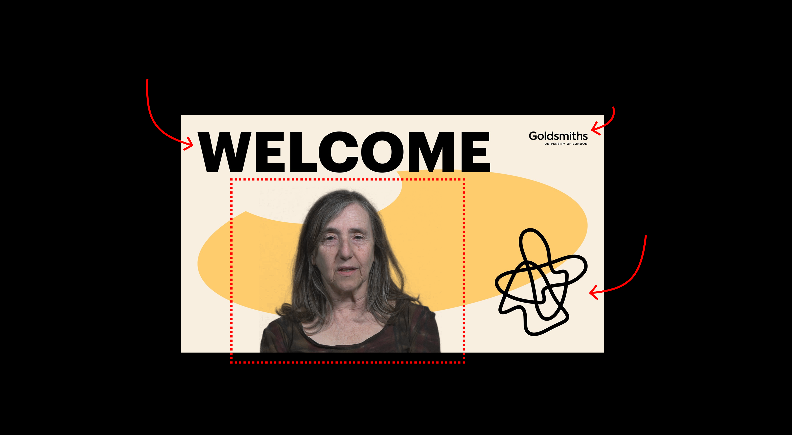
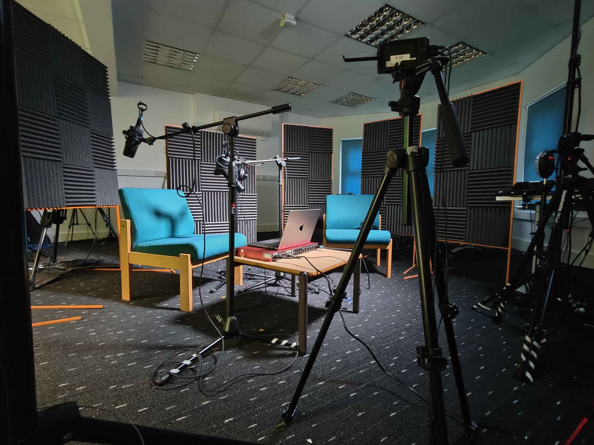
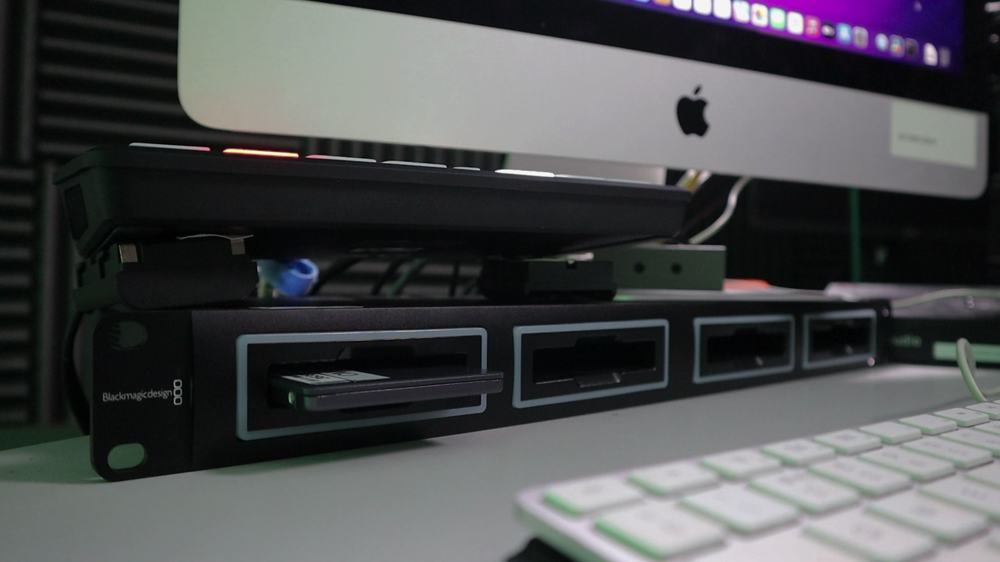
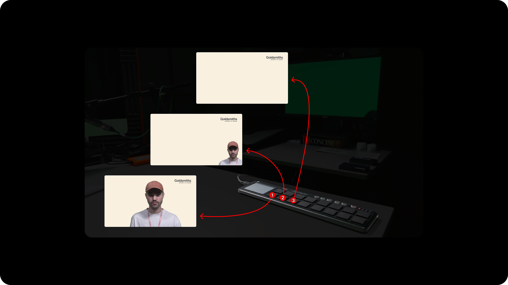
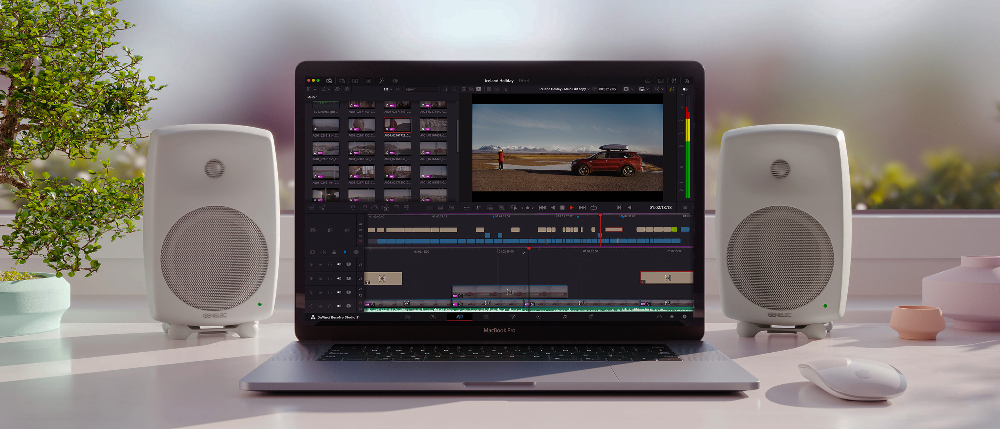

01
Slides
Prepare your presentation taking into account where you will appear in the video


Prepare your presentation taking into account where you will appear in the video

Don't wear green or similar colours, wear something which helps cut out the green screen behind

Bring your laptop and connect via HDMI or USB-C

Give a title to your video, start and stop the recording from the computer

Take the files and transfer them to your personal drive or upload them online

Use the available controller to switch between predefined video layouts

If you don't feel comfortable switching between sources, a technician can take care of editing the footage after the session

Watch how easy it is to combine sources and switch between a laptop and a tablet during a live take